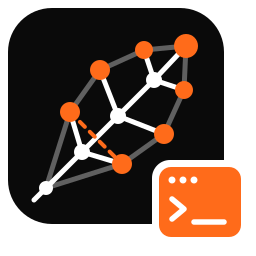

A knowledge graph in plain SQLite.
oxilite is an Oxigraph-compatible RDF database and SPARQL engine that stores everything in SQLite. It runs anywhere SQLite runs: your laptop, your app, and Cloudflare D1 at the edge.
Oxigraph semantics, SQLite everywhere.
Oxigraph stores data in RocksDB, which needs native code and a filesystem. oxilite keeps the same data model, the same SPARQL semantics and the same Rust API, but uses only plain SQL on a standard SQLite. No extensions and no custom functions are required.
Built around how SQLite runs queries.
Using SQLite as a triple store is not new. oxilite adds a design shaped by SQLite's executor and by the cost of a remote SQLite, where every round-trip and every index row is billed.
One statement per query
Joins, OPTIONAL, UNION, MINUS, aggregates, property paths and ORDER BY compile into a single SELECT. A query costs 1–2 round-trips.
Hash ids in Rust
Each term becomes a tagged 64-bit integer. Writes never read back, and SPARQL constants become integer literals at compile time.
Inline values
Integers and booleans live inside the id and sort by value, so FILTER(?age > 30) becomes an id range with no join.
Covering indexes
WITHOUT ROWID quads clustered on spog plus posg and ospg. Every scan is index-only.
Its own planner
Per-predicate and per-class statistics drive join order, enforced with CROSS JOIN. explain() shows the SQL.
Atomic writes
Every update, including DELETE/INSERT … WHERE, is one self-reading batch. That fits D1, where batch() is the only transaction.
Time travel, opt-in
Turn versioning on per store, and every write becomes a commit you can query, diff and attribute. With it off, the store is unchanged. Versioning →
Tested against Oxigraph.
Compatibility is measured, not assumed: Oxigraph's own W3C manifest runner, its store API tests and its JavaScript tests run against oxilite, plus a differential corpus on both engines.
Get started.
Pick your platform. The API mirrors Oxigraph, so existing code usually needs only a changed import.
# Cargo.toml: oxilite = "0.1" (features: rusqlite (default), dylib, d1, reasonable)
use oxilite::store::Store; // was: use oxigraph::store::Store;
use oxilite::io::RdfFormat;
let store = Store::open("data.sqlite")?;
store.load_from_reader(RdfFormat::Turtle, TURTLE.as_bytes())?;
store.query("SELECT ?s WHERE { ?s a <http://schema.org/Person> }")?;
store.update("INSERT DATA { <http://ex/a> <http://ex/p> 42 }")?;
store.optimize()?; // refresh planner statistics// npm install @oxilite/node
import { Store } from "@oxilite/node";
const store = new Store("data.sqlite");
store.load(`@prefix ex: <http://ex/> . ex:a ex:knows ex:b .`, { format: "text/turtle" });
for (const row of store.query("SELECT ?x WHERE { ?x ?p ?o }")) {
console.log(row.get("x")?.value);
}cargo install oxilite-cli
oxilite load -l data.sqlite -f dump.nt # bulk load, then refresh statistics
oxilite query -l data.sqlite -q 'SELECT * WHERE { ?s ?p ?o } LIMIT 5'
oxilite explain -l data.sqlite -q '…' # the SQL and the join order
oxilite serve -l data.sqlite -b 127.0.0.1:7879 # /query, /update, /storeEvery write, remembered.
Turn on versioning per store and oxilite keeps its history in the same SQLite file or D1 database: an immutable change log, commits with author and message, and SPARQL and Datalog queries on any past version. Off by default, and a store without it is exactly the store you had.
oxilite update -l kb.sqlite --versioning log -m "close t1" -u '…' # every write is a commit
oxilite query -l kb.sqlite --as-of HEAD~1 -q 'SELECT …' # the store one commit ago
oxilite versioning diff -l kb.sqlite HEAD~1 # A / D lines, RDF Patch style
SELECT ?t ?old ?new WHERE { # compare versions in one query
?t ex:status ?new
SERVICE <oxilite:version/HEAD~1> { ?t ex:status ?old }
FILTER(?old != ?new)
}| Level | What the store keeps | Rows written per triple on D1 (measured) |
|---|---|---|
off (default) | the present | 4.81 |
stamped | a store clock: each write is a tick, each quad records the tick that added it | 4.82 |
log | an immutable change log: every addition and removal, any past version on request | 6.82 |
Immutable history, as data
Triggers record every change, whoever writes it, and no one can edit the log. GRAPH <oxilite:history> answers "who changed this, and when" in SPARQL. Datalog and Cypher read the past too.
The present stays fast
Current-state queries keep their SQL and their plans; only a query that names a past version reads the log. On D1 a batch is one commit, and the clock needs no coordination.
Explicit levels
Opening a store never changes its level. Raise or lower it with a command or a D1 migration. Upgrades keep every quad, and downgrades freeze history unless you allow the loss.
Overview and use cases → · Walkthrough → · Benchmarks → · Design on D1 →
SPARQL at the edge with Cloudflare D1.
@oxilite/d1 runs the oxilite core as WebAssembly inside your Worker. The core compiles SPARQL to SQL, the driver sends it to env.DB, and the core decodes the rows. No Rust toolchain is needed in your project.
import { D1Store } from "@oxilite/d1";
import wasm from "@oxilite/d1/oxilite.wasm";
export default {
async fetch(req: Request, env: { DB: D1Database }) {
const store = await D1Store.open(env.DB, { wasm, migrated: true });
const q = new URL(req.url).searchParams.get("query") ?? "ASK { ?s ?p ?o }";
return new Response(await store.queryJson(q), {
headers: { "content-type": "application/sparql-results+json" },
});
},
};Every write is one D1 batch, constants are inlined to stay under the bound-parameter limit, and large UNIONs are nested to fit D1's parser limits. Read the D1 guide →
Reasoning and validation included.
The pieces a knowledge graph needs, reused from the Rust RDF ecosystem.
| Capability | How |
|---|---|
| RDFS / OWL QL | Per-query entailment by rewriting against a materialized TBox closure. Queries stay single statements. |
| OWL 2 RL | materialize() with SQL fixpoint rules on every backend, or natively with reasonable. |
| SHACL / ShEx | rudof validators, unchanged, in oxilite-validate. Results match rudof's in-memory graph. |
| Your own rules | Datalog with stratified negation, compiled to one SQL statement. datalog_materialize() stores what it derives beside the OWL inferences. See below. |
| Full-text search | FTS5 behind oxl:textMatch, on D1 too. |
| JSON-LD / Verifiable Credentials | Documents kept byte for byte, RDF in a named graph each, via json-ld and ssi-vc in oxilite-jsonld and oxilite-vc. |
Rules that recurse.
SPARQL stops at property paths: one predicate, a fixed pattern, no way to filter part-way through. Datalog gives you recursion with a body — joins, constraints, negation — and it compiles to a single WITH RECURSIVE statement, so it is still one round trip on D1.
// Cargo.toml: oxilite = { version = "0.2", features = ["datalog"] }
store.datalog(r#"
@prefix ex: <http://example.org/> .
ancestor(?x, ?y) :- ex:parent(?x, ?y).
ancestor(?x, ?z) :- ex:parent(?x, ?y), ancestor(?y, ?z). // recursion
adult(?x, ?y) :- ancestor(?x, ?y), ex:age(?y, ?a), ?a >= 18.
orphan(?x) :- ex:Person(?x), not ancestor(_, ?x). // stratified negation
lines(?x, COUNT(?y)) :- ancestor(?x, ?y). // aggregation
?- adult(?x, ?y).
"#)?;An IRI with two arguments is a predicate, so ex:parent(?x, ?y) is the triple pattern ?x ex:parent ?y; with one it is a class, so ex:Person(?x) is ?x rdf:type ex:Person. Constraints are the SPARQL expression language, pushed into the join rather than applied to its rows.
| What SQLite allows | What that means for a rule |
|---|---|
| One self-reference per recursive term | Rules must be linear to fit one statement. A non-linear rule still runs: it is iterated to a fixpoint in a work table, one request per round, and the result says how many it took. |
No self-reference under NOT EXISTS | Negation must be stratified. An unstratified program is rejected before any SQL exists, with the cycle named. |
| No aggregate in a recursive term | Aggregation must be stratified too. |
| Compound recursive terms (SQLite 3.34+) | Mutual recursion becomes one member with a discriminant column — still one statement. |
SQLite’s restrictions are Datalog’s classical safety conditions, so the compiler reports them as rule diagnostics instead of working around them. explain_datalog() shows the strata, the strategy picked for each recursive component, and the SQL.
Available from Rust, from the CLI (oxilite datalog -l db.sqlite -f rules.dl), and from JavaScript — @oxilite/node and @oxilite/d1 both return RDF/JS terms. In the WebAssembly core it is an opt-in feature (~0.2 MB), so a Worker that does not use rules does not carry it.
Verifiable Credentials and JSON-LD.
Store a credential and keep it twice over: the exact JSON under its id, and its claims as RDF in a named graph of the same IRI. SPARQL can query the graph, and indexed columns answer lookups by issuer, subject, type and validity.
const vcs = store.credentials();
const id = await vcs.put(credential); // checked (VCDM 1.1 / 2.0), stored, converted
await store.query(`SELECT * WHERE { GRAPH <${id}> { ?s ?p ?o } }`);
await vcs.find({ issuer: "did:example:issuer", validAt: new Date() });Read the walkthrough → · Query tour with SPARQL and Cypher →
oxilite studio.
A development studio for knowledge graphs, in VS Code. Open a folder of Turtle, ontologies, SHACL shapes and Datalog rules, and oxilite loads it into a store as you work: queries complete from your own data, inferences explain themselves, and shape violations land on the line that caused them.

Completion from your data
SPARQL, Turtle, Datalog and Cypher. Predicates by how often the store uses them, classes after a, and a missing PREFIX added for you.
Why is this inferred?
RDFS, OWL QL or OWL 2 RL, plus your rule files. Every inferred statement names its producer, and why? shows the proof down to the lines you wrote.
SHACL as you type
Shapes and ShEx validate in the background against asserted and inferred triples. Violations appear in the Problems panel on the data line, linked to the shape.
Tests and CI
Declare query, SHACL and entailment tests in oxilite.toml. Run them in Test Explorer, and in CI with oxilite check.
SQLite and D1
Attach a store file, a wrangler dev database or a remote D1 database, read-only by default, with the rows each request bills.
For agents too
oxilite mcp serves query, schema, validate and why as MCP tools; the extension registers it for your workspace.
# In VS Code: Extensions → search "oxilite studio", or
code --install-extension pavlyshyn.oxilite-studio
# Open a folder with .ttl, .rq, .dl or oxilite.toml files. Then:
# Cmd/Ctrl+Enter run the query, rules or Cypher in the editor
# Cmd/Ctrl+Shift+E show the SQL it compiles to
# the oxilite sidebar connections, Store Explorer, query historyVersion 0.1 ships for macOS (Apple silicon and Intel), with the server bundled. On Linux and Windows, build the server with cargo build --release -p oxilite-cli and point the oxilite.server.path setting at it. Take the tour →
Articles.
Guides and design notes: what you can build with oxilite and how it works inside. All articles →
A knowledge graph with a memory
What versioning records, what you can ask of the past, and the use cases it was built for: agent memory, curated graphs, audit, change feeds and reproducible analysis.
Read the overview → Versioning · Benchmarks · NewHow much does versioning slow oxilite down?
Write cost, commit latency, storage, and queries on the present and the past at three sizes: the present costs the same, the past from 1× to 200×, and why.
See the numbers → Versioning · Time travelTime travel for your knowledge graph
Turn on versioning per store: commits with authors and messages, SPARQL and Datalog on any past version, versions compared in one query, diffs, level changes and purges.
Read the walkthrough → Versioning · Cloudflare D1 · DesignWhat history costs on D1
Triggers, a clock with no coordination, a genesis snapshot, and the measured bill: zero extra rows per triple for a store clock, two for a full change log.
Read the design notes → VS Code · Toolingoxilite studio: a workbench for knowledge graphs
Install the VS Code extension and tour it: completion from your own data, reasoning that explains itself, SHACL on the line that broke it, tests in CI, D1 and MCP.
Take the tour → Overview · RDF · SPARQL · SQLiteIntroducing oxilite: a knowledge graph in plain SQLite
The long tour: Oxigraph compatibility, hash-id term encoding, one SQL statement per query, the planner, reasoning, validation, and the JSON-LD and Verifiable Credentials layer.
Read the overview → Datalog · Recursion · RulesRules your SPARQL can't write
Recursive Datalog over the same quads: joins, constraints, stratified negation and aggregation mid-recursion, compiled to a single SQL statement — and foldable into the reasoner's inference set.
Read the walkthrough → Ontologies · SHACL · ReasoningTell the store which graphs are schema
Declare a graph an ontology or a shapes graph: scope reasoning to the ontologies you trust, keep axioms out of data queries, and give Cypher and the SHACL validator one compiled source of truth.
Read the design note → Cloudflare · AgentsGraph memory for AI agents on Durable Objects
Give every agent a private knowledge graph in a Durable Object's SQLite. A step-by-step guide covering multi-hop recall, provenance, belief revision and LLM tools.
Read the guide → JSON-LD · Verifiable CredentialsVerifiable Credentials and JSON-LD, in SQLite
Keep credentials exactly as issued and query their claims with SPARQL: one named graph per credential, indexed metadata and offline contexts, on Node.js, Rust and D1.
Read the walkthrough → JSON-LD · SPARQL · CypherAsk your credentials anything
Query JSON-LD documents and Verifiable Credentials by provenance, joins, typed dates, RDFS reasoning and full-text search, then match them as a Cypher graph. Every query is a tested example.
Take the query tour → Cypher · RDF 1.2Property graphs on oxilite, with Cypher
Build a property graph with Cypher, read it with SPARQL, and let OWL and SHACL shape the answers. A tested walkthrough on Node.js, Rust and D1.
Read the walkthrough →